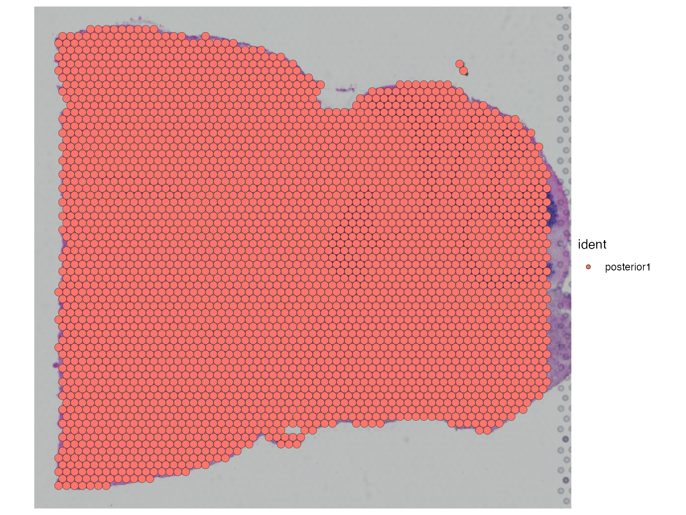
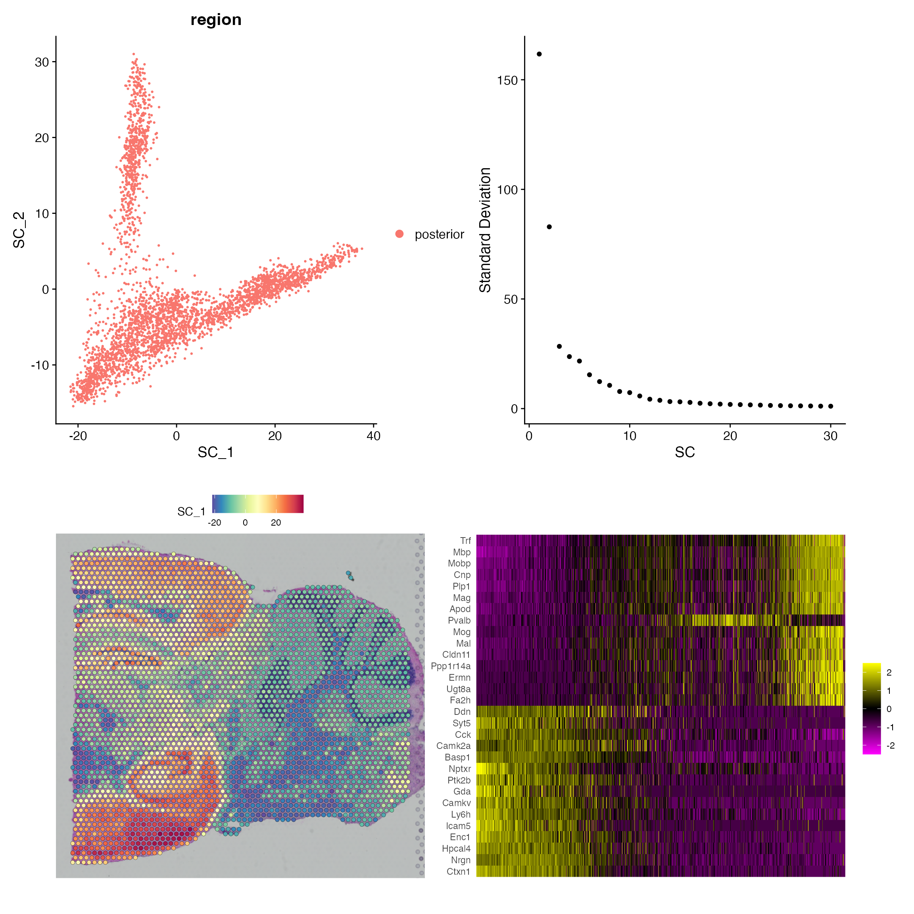
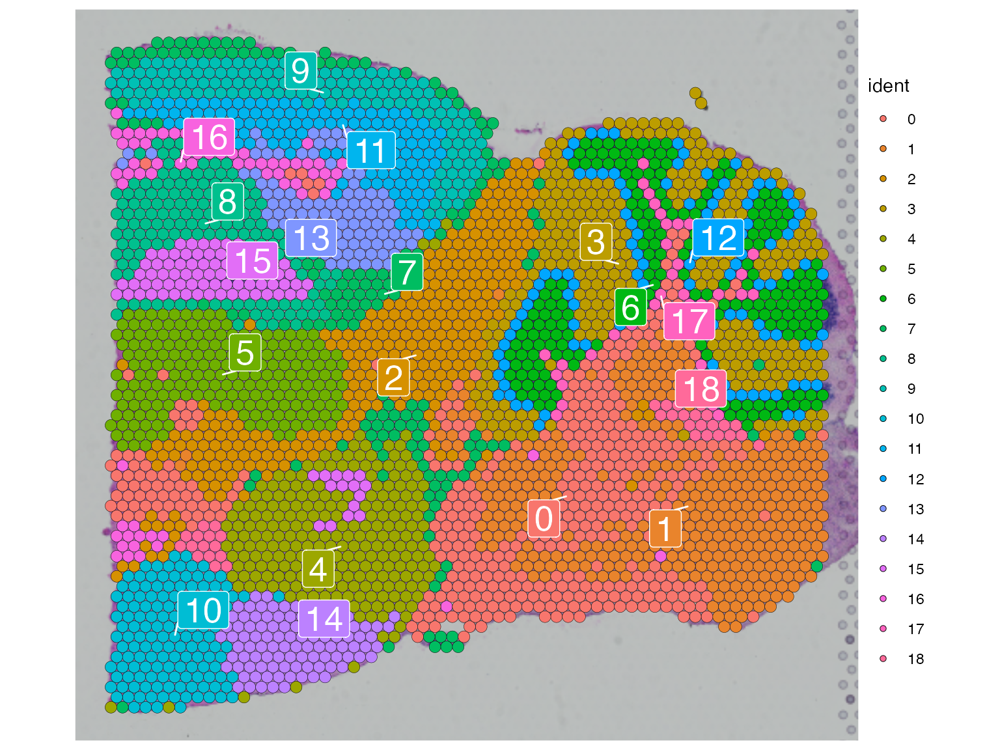
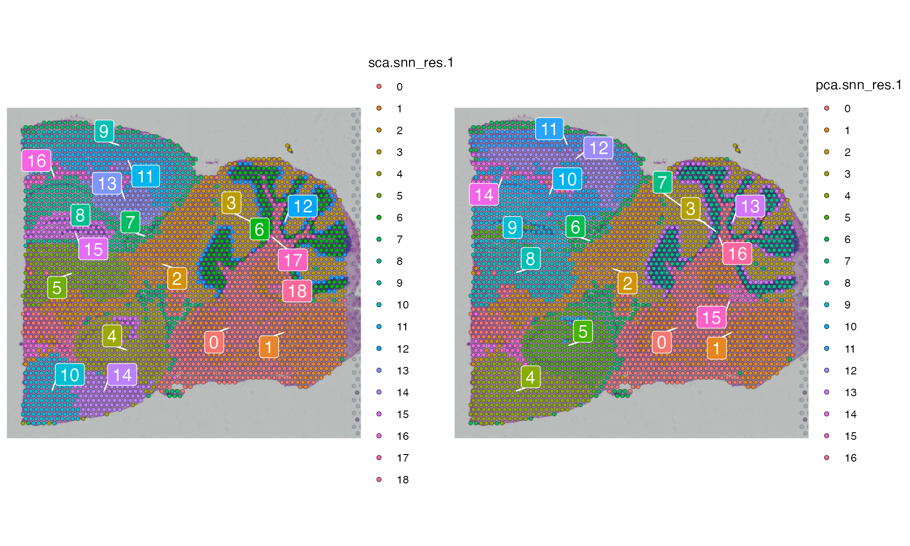
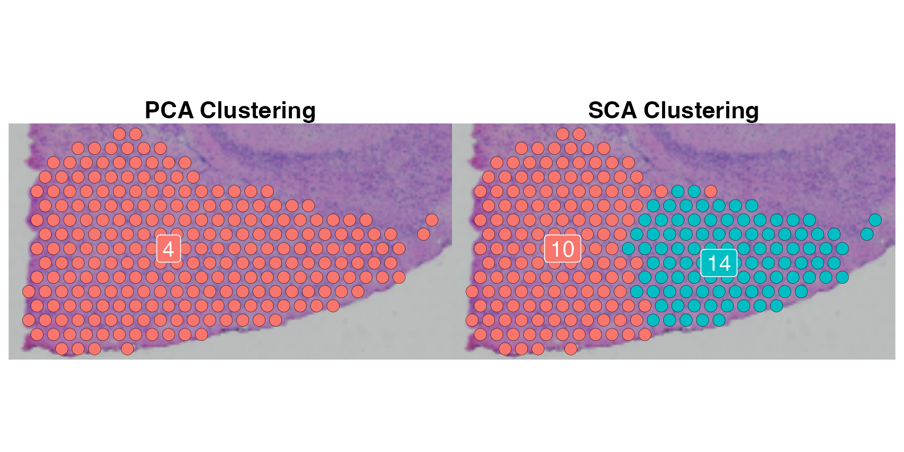
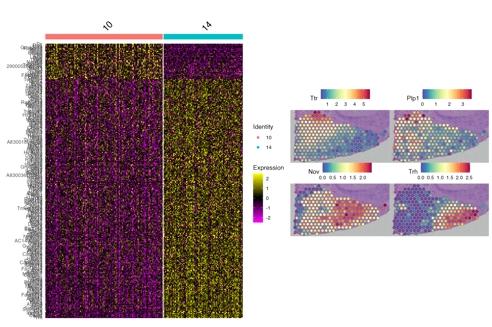

Get started with Visium Brain data
Last Run: April 29, 2022
Source:vignettes/get_started.Rmd
get_started.RmdLoad Visium Brain Data
For this tutorial, we will be analyzing the Visium Sagittal-Posterior Mouse Brain data produced by 10x Genomics.
A fraction of this data containing 3353 spatial barcodes (spots) and 2000 highly variable genes can be loaded using the LoadData function. We will be using Seurat for this analysis.
# install Seurat v4.0.0
if (!requireNamespace("Seurat", quietly = TRUE) | utils::packageVersion("Seurat") < "4.0.0")
remotes::install_version("Seurat", version = "4.0.0")
# load data
library(rspca)
library(Seurat)
library(ggplot2)
posterior1 <- LoadData("Visium.Brain")
SpatialDimPlot(posterior1)
Spatial Component Analysis (SCA)
To run Spatial Component Analysis (SCA), we will need to define a weight matrix between each pair of datapoints (spots).
To achieve this, we first calculate the distance between each spots using hexagonal nearest neighbor distance (VisiumHnn and HnnNeighbor functions) as it resembles the way Visium slides were generated.
HnnNeighbor function.

To turn this distance matrix to a weight matrix, we call HnnWeight function to apply a Gaussian filter. I'm using parameter dist.k = 2 to consider only the 2nd-degree neighbors and sigma = 2 for filter width.
# HNN distance
posterior1.hnn.dist <- VisiumHnn(Cells(posterior1))
# HNN weights
posterior1.data.hnn <- HnnNeighbor(posterior1.hnn.dist, k = 19, include.self = FALSE)
posterior1.data.weight <- HnnWeight(posterior1.data.hnn$dist.mat, dist.k = 2, sigma = 2)After this, we are ready to run SCA using the 2000 spatial transcriptomic measurements and the weight matrix we just calculated. Here I set the n.eigen = 30 to return only the first 30 Spatial Components (SCs), and plot four different visualizations:
- Dimensional reduction plot of first two SCs. (top left)
- Elbow plot showing the eigenvalues or variance explained. (top right)
- Visualization of the first SC levels in space. (bottom left)
- Heatmap showing the features with the largest SC loadings. (bottom right)
# Run SCA
posterior1 <- ScaleData(posterior1)
posterior1.sca <- SCA(X = Matrix::t(posterior1@assays$Spatial@data),
W = posterior1.data.weight,
scaled.data = t(posterior1@assays$Spatial@scale.data),
n.eigen = 30)
# Store in the Seurat object
posterior1@reductions[["sca"]] <- CreateDimReducObject(embeddings = posterior1.sca$X,
loadings = posterior1.sca$rotation,
stdev = posterior1.sca$eigenvalues,
key = "SC_", assay = "Spatial")
# Visualization
p1 <- DimPlot(posterior1, reduction = "sca", group.by = "region")
p2 <- ElbowPlot(posterior1, reduction = "sca", ndims = 30)
p3 <- SpatialFeaturePlot(posterior1, features = 'SC_1')
p4 <- DimHeatmap(posterior1, reduction = "sca", fast = FALSE)
(p1+p2)/(p3+p4)
Downstream Analysis
Once finished, we can use the Spatial Components (SCs) for downstream analysis such as clustering. Here we utilized Seurat's FindClusters function to identify clusters of spots using the first 20 SCs we just calculated.
posterior1 <- FindNeighbors(posterior1, reduction = "sca", dims = 1:20,graph.name = c("sca.nn", "sca.snn"))
posterior1 <- FindClusters(posterior1, resolution = 1, verbose = FALSE, graph.name = "sca.snn")
SpatialDimPlot(posterior1, label = TRUE, label.size = 7, repel = TRUE)
Comparison to PCA
We can compare the clustering result based on SCA to PCA. Here I used the same clustering parameters but with the first 20 PCs instead of SCs.
posterior1 <- RunPCA(posterior1, npcs = 30, verbose = FALSE)
posterior1 <- FindNeighbors(posterior1, reduction = "pca", dims = 1:20, graph.name = c("pca.nn", "pca.snn"))
posterior1 <- FindClusters(posterior1, resolution = 1, verbose = FALSE, graph.name = "pca.snn")
p1 <- SpatialDimPlot(posterior1, label = TRUE, label.size = 5, group.by = "sca.snn_res.1", repel = TRUE)
p2 <- SpatialDimPlot(posterior1, label = TRUE, label.size = 5, group.by = "pca.snn_res.1", repel = TRUE)
p1+p2
There are 19 clusters (0-18) and 17 clusters (0-16) that were identified by SCA and PCA respectively.
We can visualize the differences between the two clustering results using Chi-square test and interpret the result with Chi-square residuals.
# Chi-square test
tab <- xtabs(data = posterior1@meta.data[,c("sca.snn_res.1","pca.snn_res.1")])
chi.result <- chisq.test(tab)
chi.resid <- unclass(chi.result$residuals)
# Data for visualization
data.plot <- Seurat:::Melt(chi.resid)
colnames(data.plot)[1:3] <- c("SCA clustering", "PCA clustering", "Chi-square Residual")
# Reorder the columns
data.plot[,1] <- factor(data.plot[,1],
levels = order(apply(chi.resid, 1, which.max))[c(1:10,12:11,13:19)]-1,
ordered = TRUE)
data.plot[,2] <- factor(data.plot[,2], levels = unique(as.numeric(data.plot[,2])), ordered = TRUE)
# Heatmap
ggplot(data = data.plot, aes(x=`PCA clustering`, y=`SCA clustering`, fill=`Chi-square Residual`)) +
geom_tile() + cowplot::theme_cowplot(font_size = 20) + labs(fill="Chi-square\nResidual")
Conclusion
For this data, the clustering results based on SCA and PCA in general agree with each other. However, as we noted PCA cluster 4, 9 and 10 were split by the SCA each into two distinct groups.
Here, we will go through one of them in detail to check whether SCA made a false discovery or PCA underestimated certain distinct clusters. PCA Cluster 4 vs SCA Cluster 10 and 14<>
cluster4 <- subset(posterior1, pca.snn_res.1 == 4 & sca.snn_res.1 %in% c(10, 14))
cluster4$sca.snn_res.1 <- factor(cluster4$sca.snn_res.1)
cluster4$pca.snn_res.1 <- factor(cluster4$pca.snn_res.1)
p1 <- SpatialDimPlot(cluster4, group.by = "pca.snn_res.1", pt.size.factor = 3,
label = TRUE, label.size = 5) +
ggtitle("PCA Clustering") + NoLegend() +
theme(plot.title = element_text(size = 15, face = 2, hjust = 0.5))
p2 <- SpatialDimPlot(cluster4, group.by = "sca.snn_res.1", pt.size.factor = 3,
label = TRUE, label.size = 5) +
ggtitle("SCA Clustering") + NoLegend() +
theme(plot.title = element_text(size = 15, face = 2, hjust = 0.5))
p1 + p2
We can examine the differentially expressed genes between cluster 10 and 14 from SCA clustering. We see that these are heterogeneous populations marked by different gene expressions.
de.genes <- FindMarkers(cluster4, 14, 10, group.by = "sca.snn_res.1", verbose = FALSE)
de.genes <- de.genes[de.genes$p_val_adj < 0.05, ]
de.genes <- de.genes[order(de.genes$avg_log2FC),]
cluster4 <- ScaleData(cluster4, features = rownames(de.genes))
p1 <- DoHeatmap(cluster4, rownames(de.genes), group.by = "sca.snn_res.1")
p2 <- SpatialFeaturePlot(cluster4, c(head(rownames(de.genes),2), tail(rownames(de.genes),2)),
pt.size.factor = 3)
p1 + p2 <>
Session Information
print(sessionInfo())
## R version 4.0.3 (2020-10-10)
## Platform: x86_64-apple-darwin17.0 (64-bit)
## Running under: macOS Big Sur 10.16
##
## Matrix products: default
## BLAS: /Library/Frameworks/R.framework/Versions/4.0/Resources/lib/libRblas.dylib
## LAPACK: /Library/Frameworks/R.framework/Versions/4.0/Resources/lib/libRlapack.dylib
##
## locale:
## [1] en_US.UTF-8/en_US.UTF-8/en_US.UTF-8/C/en_US.UTF-8/en_US.UTF-8
##
## attached base packages:
## [1] stats graphics grDevices utils datasets methods base
##
## other attached packages:
## [1] ggplot2_3.3.3 SeuratObject_4.0.0 Seurat_4.0.1 rspca_0.1.0
##
## loaded via a namespace (and not attached):
## [1] Rtsne_0.15 colorspace_2.0-0 deldir_0.2-3 ellipsis_0.3.2 ggridges_0.5.3 rprojroot_2.0.2
## [7] fs_1.5.0 rstudioapi_0.13 spatstat.data_1.7-0 farver_2.0.3 leiden_0.3.6 listenv_0.8.0
## [13] ggrepel_0.9.0 RSpectra_0.16-0 codetools_0.2-18 splines_4.0.3 cachem_1.0.1 knitr_1.38
## [19] polyclip_1.10-0 jsonlite_1.7.2 ica_1.0-2 cluster_2.1.0 png_0.1-7 uwot_0.1.10
## [25] shiny_1.5.0 sctransform_0.3.2 spatstat.sparse_2.0-0 compiler_4.0.3 httr_1.4.2 Matrix_1.3-2
## [31] fastmap_1.1.0 lazyeval_0.2.2 limma_3.46.0 cli_3.2.0 later_1.1.0.1 htmltools_0.5.2
## [37] tools_4.0.3 igraph_1.2.6 gtable_0.3.0 glue_1.6.2 RANN_2.6.1 reshape2_1.4.4
## [43] dplyr_1.0.2 Rcpp_1.0.7 scattermore_0.7 jquerylib_0.1.3 pkgdown_2.0.2 vctrs_0.4.1
## [49] nlme_3.1-151 lmtest_0.9-38 xfun_0.30 stringr_1.4.0 globals_0.14.0 mime_0.9
## [55] miniUI_0.1.1.1 lifecycle_1.0.1 irlba_2.3.3 goftest_1.2-2 future_1.21.0 MASS_7.3-53
## [61] zoo_1.8-8 scales_1.1.1 spatstat.core_1.65-5 ragg_0.4.0 promises_1.1.1 spatstat.utils_2.1-0
## [67] parallel_4.0.3 RColorBrewer_1.1-2 yaml_2.2.1 memoise_2.0.1 reticulate_1.18 pbapply_1.4-3
## [73] gridExtra_2.3 sass_0.4.0 rpart_4.1-15 stringi_1.5.3 highr_0.8 desc_1.4.1
## [79] rlang_1.0.2 pkgconfig_2.0.3 systemfonts_0.3.2 matrixStats_0.57.0 evaluate_0.15 lattice_0.20-41
## [85] ROCR_1.0-11 purrr_0.3.4 tensor_1.5 labeling_0.4.2 patchwork_1.1.1 htmlwidgets_1.5.3
## [91] cowplot_1.1.1 tidyselect_1.1.0 parallelly_1.23.0 RcppAnnoy_0.0.18 plyr_1.8.6 magrittr_2.0.1
## [97] R6_2.5.0 generics_0.1.0 DBI_1.1.0 withr_2.4.3 mgcv_1.8-33 pillar_1.4.7
## [103] fitdistrplus_1.1-3 survival_3.2-7 abind_1.4-5 tibble_3.0.4 future.apply_1.7.0 crayon_1.3.4
## [109] KernSmooth_2.23-18 spatstat.geom_1.65-5 plotly_4.9.2.2 rmarkdown_2.13 grid_4.0.3 data.table_1.13.6
## [115] digest_0.6.27 xtable_1.8-4 tidyr_1.1.2 httpuv_1.5.4 textshaping_0.2.1 munsell_0.5.0
## [121] viridisLite_0.3.0 bslib_0.3.1